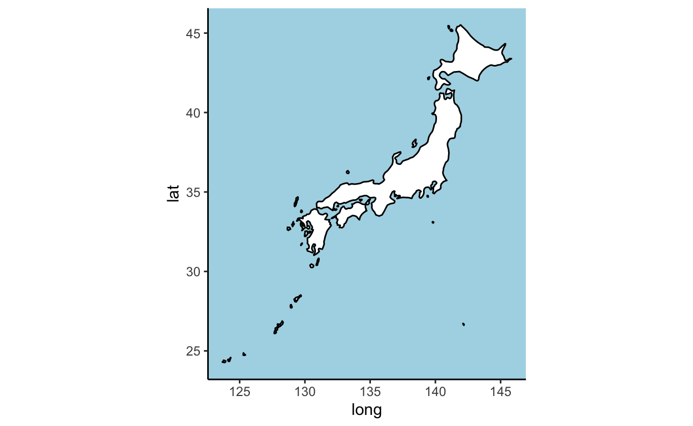
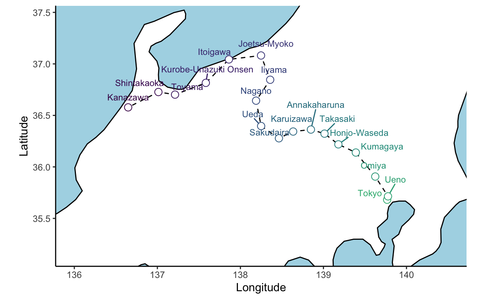
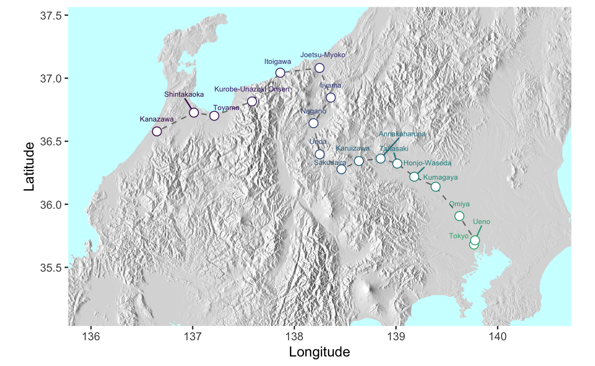
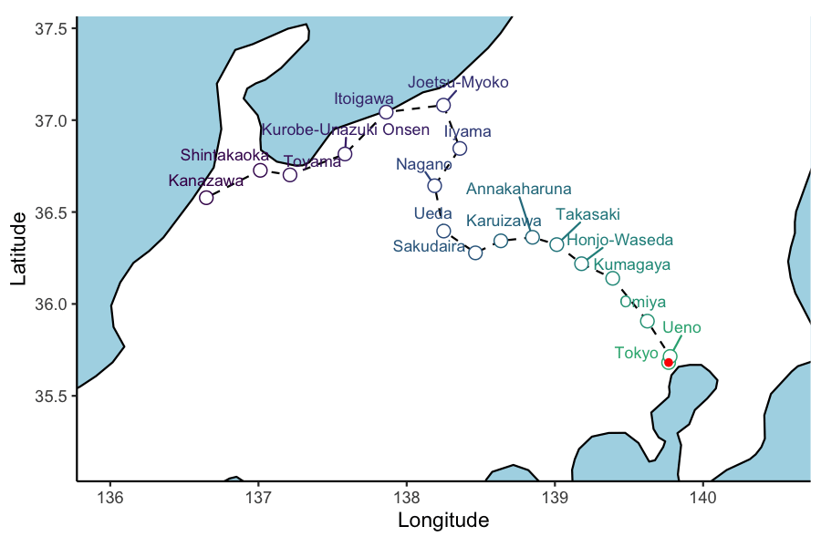

The better kind of bullets

After returning from Japan feeling bereft of high-tech public transport options, I started a project that would chart the movement of shinkansen (bullet trains) across Japan in near real time. Whereas sites like tetsudonow display excellent real-time interactive metro line service animations, I wanted to see trains running over a larger spatial scale. Real time interactivity is a longer-term goal.
Starting from a single column of station names and stop times, this turned out to be a tricky undertaking, involving date/time manipulation, world map data, and rendering non-standard text and emojis wrapped as animations.
Below, instead of walking through every step, I outline the main problems I encountered and my solutions. Anyone interested in the grizzly details can read my comments in the code chunks.
The project required four main components:
- scraping real timetable data from jorudan.co.jp,
- mapping latitude longitude and elevation data to recreate the train route and surrounding topography,
- animating train icons according to the timetable data, and
- calculating the unpublished passage times for express trains through non-stopping stations.
Scraping timetable data
The selected timetable is for the Tokyo-Nagano-Kanazawa (‘Hokuriku’) line, during the time window 1-7pm on 22 March 2020. There are six services departing Tokyo on this timetable, labelled service 3-8. Using the rvest library we read the table data from the timetable url.
l1 <- list.files('project_data/', pattern='Rds')
if('raw_rvest_data.Rds' %in% l1){
p1 <- readRDS('project_data/raw_rvest_data.Rds')
print('Reading from local file to avoid "digital rot"!')
}else{
url <- "https://www.jorudan.co.jp/time/cgi/time.cgi?Csg = 0&Sok = 1&pg = 21&rf = tm&lnm = %A4%A2%A4%B5%A4%DE613%B9%E6%28E7%2FW7%B7%CF%29%28%C4%B9%CC%EE%B9%D4%29&rnm = %CB%CC%CE%A6%BF%B7%B4%B4%C0%FE&eki1 = %C5%EC%B5%FE&eki2 = D%B6%E2%C2%F4&Dym = 202203&Ddd = 14&Dhh = 14&Dmn = 24&Dw = 0"
p1 <- read_html(url) %>%
html_nodes('td') %>% html_text() %>%
as_tibble() %>% mutate(value = str_remove_all(value, "\n"))
saveRDS(p1, file='project_data/raw_rvest_data.Rds')
}[1] "Reading from local file to avoid \"digital rot\"!"print(p1,n=20)# A tibble: 162 × 1
value
<chr>
1 "■"
2 "東京"
3 " 13:04発"
4 " 13:24発"
5 " 14:04発"
6 " 14:24発"
7 " 15:04発"
8 " 15:24発"
9 ""
10 "■"
11 "上野"
12 "13:09着13:10発"
13 "13:29着13:30発"
14 "14:09着14:10発"
15 "14:29着14:30発"
16 "15:09着15:10発"
17 "15:29着15:30発"
18 ""
19 "■"
20 "大宮"
# … with 142 more rows
# ℹ Use `print(n = ...)` to see more rowsThe scraped data is a single vector in repeating units of 9 rows. To wrangle this into a timetable we force it into a matrix of 9 columns. This gives every second station. The interspersed stations are in rows 10-18. To create the final timetable we assign odd and even row numbers then interleave the two tables:
jikoku <- rbind(
#Table 1 odd number stops
as_tibble(t(matrix(p1$value, ncol = 9))) %>%
as_tibble() %>%
select(V1:V9) %>%
mutate(order = seq(1, 2*(nrow(.)), 2)),
#Table 2 even number stops
as_tibble(t(matrix(p1$value, ncol = 9))) %>%
as_tibble() %>%
select(V10:V18) %>%
mutate(order = seq(2, 2*(nrow(.)), 2)) %>%
magrittr::set_colnames(c(paste0('V', 1:9), 'order'))
) %>%
#Arrange by row number
arrange(order) %>%
select(V2, order, everything(), -V1, -V9) %>% rename(Station = V2) %>%
print()# A tibble: 18 × 8
Station order V3 V4 V5 V6 V7 V8
<chr> <dbl> <chr> <chr> <chr> <chr> <chr> <chr>
1 東京 1 13:04発 13:24… 14:… 14:… 15:… 15:…
2 上野 2 13:09着13:10発 13:29… 14:0… 14:2… 15:0… 15:2…
3 大宮 3 13:28着13:29発 13:48… 14:2… 14:4… 15:2… 15:4…
4 熊谷 4 13:41着13:42発 ↓ 14:4… ↓ 15:4… ↓
5 本庄早稲田 5 13:50着13:51発 ↓ 14:5… ↓ 15:5… ↓
6 高崎 6 14:00着14:01発 14:14… 15:0… 15:1… 16:0… 16:1…
7 安中榛名 7 ↓ ↓ 15:0… ↓ ↓ ↓
8 軽井沢 8 14:16着14:17発 ↓ 15:2… ↓ 16:1… 16:2…
9 佐久平 9 14:25着14:26発 ↓ 15:3… ↓ 16:2… ↓
10 上田 10 14:35着14:36発 ↓ 15:3… ↓ 16:3… ↓
11 長野 11 14:47着 14:51… 15:5… 15:5… 16:4… 16:5…
12 飯山 12 15:04… ↓ 17:0…
13 上越妙高 13 15:15… 16:1… 17:1…
14 糸魚川 14 15:28… 16:2… 17:3…
15 黒部宇奈月温泉 15 15:43… 16:4… 17:4…
16 富山 16 15:56… 16:5… 17:5…
17 新高岡 17 16:05… 17:0… 18:0…
18 金沢 18 16:19… 17:1… 18:2…Now we reshape the timetable into long format, and separate the times for station arrival (着) and departure (発) into two columns, before spreading the data back into a readable timetable with each service as a new column. The express (non-stopping) stations are now encoded as NA instead of “↓”.
jikoku_clean <- jikoku %>% gather(key, value, -c(Station, order)) %>%
mutate(key = str_replace(key, 'V', 'service_')) %>%
rename(service = key) %>%
mutate(value = str_replace(value, "↓", NA_character_)) %>%
separate(value, into = c('arr', 'dpt'), sep = "着") %>%
#move into the dpt column any data in arrival column containing departure information ('発'):
mutate(dpt = ifelse(str_detect(arr, '発'), arr, dpt)) %>%
mutate(arr = ifelse(str_detect(arr, '発'), NA, arr)) %>%
#drop the kanji:
mutate(dpt = str_remove_all(dpt, '発')) %>%
#create a longer-format table to separate arr and dpt rows:
gather(key, value, arr, dpt) %>%
arrange(order, Station, value) %>%
na.omit() %>%
#create a wide-format table with service ('service') as new column names:
spread(service, value) %>% arrange(order)
#NB because Japanese font doesn't seem to render on interactive tables, for ease of viewing I drop Station column from output:
jikoku_clean %>% select(-Station)# A tibble: 35 × 8
order key service_3 service_4 service_5 service_6 servi…¹ servi…²
<dbl> <chr> <chr> <chr> <chr> <chr> <chr> <chr>
1 1 dpt 13:04 13:24 14:04 14:24 15:04 15:24
2 2 arr 13:09 13:29 14:09 14:29 15:09 15:29
3 2 dpt 13:10 13:30 14:10 14:30 15:10 15:30
4 3 arr 13:28 13:48 14:28 14:48 15:28 15:48
5 3 dpt 13:29 13:49 14:29 14:49 15:29 15:49
6 4 arr 13:41 <NA> 14:41 <NA> 15:41 <NA>
7 4 dpt 13:42 <NA> 14:42 <NA> 15:42 <NA>
8 5 arr 13:50 <NA> 14:50 <NA> 15:50 <NA>
9 5 dpt 13:51 <NA> 14:51 <NA> 15:51 <NA>
10 6 arr 14:00 14:14 15:00 15:14 16:00 16:12
# … with 25 more rows, and abbreviated variable names ¹service_7,
# ²service_8
# ℹ Use `print(n = ...)` to see more rowsGeographic maps
This step requires the plotting coordinates for Honshu island, and GPS coordinates and English translations for the Hokuriku line stations.
Plot the land mass
Using the maps library we can extract coordinates for Japan, then use
ggplot with coord_quickmap() to flatten the latitude and
longitude into 2D space. Somehow colouring the plot background blue
(‘theme_sea’) requires about as much code as does the much more
complicated mapping function….
library(maps)
JPAN <- filter(map_data("world"), region=="Japan") %>% as_tibble()
jp_map <- ggplot(JPAN, aes(x = long, y = lat, group = group)) +
geom_polygon(fill = "white", colour = "black") +
coord_quickmap()
theme_sea <- theme_classic() + theme(panel.background = element_rect(fill="light blue"),
legend.position = 'bottom') # <- required for later
jp_map + theme_sea
City GPS points
Next we need the google maps API to search the latitude and longitude
of each city on the line. This can be costly for big projects. Anyone
trying to recreate this project can use the supplied data (github)
instead of running the geocode() commands.
For this step I borrowed heavily from this blog post: https://www.littlemissdata.com/blog/maps and this SO thread.
#Read table of translated station names
hokuriku <- read_csv('project_data/hokuriku_translated.csv', show_col_types = F, col_names = TRUE)#devtools::install_github("dkahle/ggmap", ref = "tidyup", force = TRUE)
#Load the library
library("ggmap")
#Set the Google Maps API
# httr::set_config(httr::config(http_version = 0))
#Set your API Key
register_google(key = "<<your key here>>")
geocode('Tokyo, Japan')Now to save some money:
ll_files <- list.files( 'project_data/', pattern='j_train_lat_lon_GCPbill')
if('j_train_lat_lon_GCPbill.tsv' %in% ll_files){
print('lat_long exists, dont rerun GCP billing')
jikoku_gps <- read_tsv('project_data/j_train_lat_lon_GCPbill.tsv')
jikoku_gps %>% select(1,English,lon,lat) %>% print()
}else{
jikoku_gps <- jikoku_clean %>%
left_join(hokuriku, by = c('Station' = 'Japanese')) %>%
mutate(English = paste0('JR ', English, ' Station, Japan')) %>%
#muate_geocode() searches for GPS coordinates in the supplied column of location names:
mutate_geocode(location = English) %>%
group_by(Station,English) %>% fill(lon,lat, .direction = 'down') %>% ungroup()
#manual repair mis-translated: Sakudaira & Annakaharuna
#manual repair Karuizawa: 36.34325739599876, 138.63521437877966
jikoku_gps <- jikoku_gps %>%
mutate(lon = ifelse(English=='JR Karuizawa Station, Japan', 138.63521437877966, lon),
lat = ifelse(English=='JR Karuizawa Station, Japan', 36.34325739599876, lat)) %>%
#strip redundant text:
mutate(English=str_remove_all(English,'JR '),
English=str_remove_all(English,' Station, Japan'))
write_tsv(jikoku_gps, 'project_data/j_train_lat_lon_GCPbill.tsv')
}[1] "lat_long exists, dont rerun GCP billing"
# A tibble: 35 × 4
Station English lon lat
<chr> <chr> <dbl> <dbl>
1 東京 Tokyo 140. 35.7
2 上野 Ueno 140. 35.7
3 上野 Ueno 140. 35.7
4 大宮 Omiya 140. 35.9
5 大宮 Omiya 140. 35.9
6 熊谷 Kumagaya 139. 36.1
7 熊谷 Kumagaya 139. 36.1
8 本庄早稲田 Honjo-Waseda 139. 36.2
9 本庄早稲田 Honjo-Waseda 139. 36.2
10 高崎 Takasaki 139. 36.3
# … with 25 more rows
# ℹ Use `print(n = ...)` to see more rowsWe can now overlay the stations on the Honshu map and zoom in on the line:
hokuriku_map <- jikoku_gps %>% select(order, Station,English,lon,lat) %>% distinct() %>%
ggplot2::ggplot(aes(x=lon,y=lat, group=order)) +
geom_polygon( data=JPAN, aes(x = long, y = lat, group = group),
fill = "white", colour ='black') +
geom_path(group=1, lty=2, col="black", lwd=0.5) +
ggrepel::geom_text_repel( aes(label=English, y=lat, col= order), nudge_y = 0.1, cex=3,
seed=1234,show.legend = F) +
geom_point( aes(col= order), cex=3, pch=21, bg='white', show.legend = F) +
scale_color_viridis_c(end=0.65, direction = -1) +
ylab('Latitude') + xlab('Longitude') +
theme_sea +
coord_quickmap(xlim=c(136, 140.5), ylim=c(35.15,37.45))
hokuriku_map
While this is a fine result, there is a lot of empty space that could be made more interesting by including Japan’s mountainous terrain- a key element in the scenic excitement of bullet train rides. To do this required a coding odyssey that might be the subject of another post. We will use the resulting elevation .png file as a background for the plot data, in place of the geom_polygon geographic outline used above.
library(magick); library(png); library(grid); library(cowplot)
mypng <- readPNG('project_charts/raster_hills_japan_latlon.png')
jpn_png_grob <- rasterGrob(mypng)
hokuriku_map_elev <- jikoku_gps %>% select(order, Station,English,lon,lat) %>% distinct() %>%
ggplot(aes(x=lon,y=lat, group=order)) +
#render the elevation png image as the first layer in the plotting space
draw_image(mypng, interpolate = T, x = 135.75,y=34.55, width=5, height=3.5) +
geom_path(group=1, lty=2, col="black", lwd=0.5, alpha=0.5) +
ggrepel::geom_text_repel( aes(label=English, y=lat, col= order), nudge_y = 0.1, cex=2,
seed=1234,show.legend = F) +
geom_point( aes(col= order), cex=3, pch=21, bg='white', show.legend = F) +
scale_color_viridis_c(end=0.65, direction = -1) +
ylab('Latitude') + xlab('Longitude') +
coord_quickmap(xlim=c(136, 140.5), ylim=c(35.15,37.45))
hokuriku_map_elev
Calculate inter-stop distances
Lastly for the mapping stage, in order to interpolate the express station pass-thru times (below), we need to calculate the distance (kM) between each pair of consecutive stops, and the cumulative line distance. The geosphere library allows Euclidean distance calculations (given the lat-lon points are on a sphere).
library(geosphere)
#calculate pairwise distances
pws_dist <- jikoku_gps %>% select(Station, English, lat, lon) %>% distinct() %>%
mutate(lag_lon = lag(lon), lag_lat = lag(lat)) %>%
rowwise() %>%
mutate(stopDist = 0.001 * distHaversine(c(lon, lat), c(lag_lon, lag_lat))) %>%
ungroup() %>%
mutate(across(.cols = c(contains('lag'),stopDist), ~replace_na(.x, 0))) %>%
mutate(cumDist = cumsum(stopDist)) %>%
print()# A tibble: 18 × 8
Station English lat lon lag_lon lag_lat stopD…¹ cumDist
<chr> <chr> <dbl> <dbl> <dbl> <dbl> <dbl> <dbl>
1 東京 Tokyo 35.7 140. 0 0 0 0
2 上野 Ueno 35.7 140. 140. 35.7 3.78 3.78
3 大宮 Omiya 35.9 140. 140. 35.7 25.5 29.3
4 熊谷 Kumagaya 36.1 139. 140. 35.9 33.4 62.7
5 本庄早稲田 Honjo-W… 36.2 139. 139. 36.1 20.9 83.5
6 高崎 Takasaki 36.3 139. 139. 36.2 18.9 102.
7 安中榛名 Annakah… 36.4 139. 139. 36.3 15.3 118.
8 軽井沢 Karuiza… 36.3 139. 139. 36.4 19.3 137.
9 佐久平 Sakudai… 36.3 138. 139. 36.3 17.0 154.
10 上田 Ueda 36.4 138. 138. 36.3 23.3 177.
11 長野 Nagano 36.6 138. 138. 36.4 28.0 205.
12 飯山 Iiyama 36.8 138. 138. 36.6 27.2 233.
13 上越妙高 Joetsu-… 37.1 138. 138. 36.8 28.0 261.
14 糸魚川 Itoigawa 37.0 138. 138. 37.1 34.6 295.
15 黒部宇奈月温泉 Kurobe-… 36.8 138. 138. 37.0 35.4 331.
16 富山 Toyama 36.7 137. 138. 36.8 35.4 366.
17 新高岡 Shintak… 36.7 137. 137. 36.7 18.1 384.
18 金沢 Kanazawa 36.6 137. 137. 36.7 36.5 421.
# … with abbreviated variable name ¹stopDistHow to train your animation
The gganimate
package is a neat addition to the ggplot vocabulary. The
transition_ geom family allows animation of data (iterative
png snap-shots) in the specified column. Given each frame is rendered
from a separate plotting call, any geoms with random jittering
(e.g. geom_jitter, ggrepel) will jump around. This is fixed by
specifying seed in the map call above. For this prototyping
stage, we use the ‘blank’ geographical background (no elevation) which
is faster to render and creates a much smaller gif.
library(gganimate)
test_service <- jikoku_gps %>% select(-c(service_4:service_8)) %>%
#omit NA and empty cells:
filter(str_detect(service_3,':')) %>%
mutate(service_3_dttm = as_datetime(hm(service_3) ))
ani_plt <- hokuriku_map +
geom_point(data = test_service, aes(x=lon, y=lat, group = 1), col='red') +
transition_reveal(service_3_dttm )
animate(ani_plt, height = 4, width = 6, units = "in", res = 150, duration=10,nframes=100)
Now to add the all-important bullet train emoji using emoGG:
#devtools::install_github('dill/emoGG')
library(emoGG)
ani_plt_train <- hokuriku_map +
geom_emoji( data = test_service, aes(x=lon, y=lat, group = 1), cex=0.04,
#emoji='1f685') +
emoji='1f686') +
transition_reveal(service_3_dttm )
animate(ani_plt_train, height = 4, width = 6, units = "in", res = 150, duration=10,nframes=100)You might have noticed that Annakaharuna station is skipped by Service 3. This slightly annoying crack in the animation becomes a gaping chasm when super-/express Hakutaka & Kagayaki services are added to the plotting data. They simply don’t follow the track through the skipped stations. To remedy this required a lot of head-scratching and some Google persistence.
Express to insanity
The timetable contains NA values for skipped stations. For services that terminate at mid-point stations, e.g. Nagano, subsequent station times contain blank text, not NA.
This problem was solved in multiple steps:
1. Retain only the stations between start and terminal stations for each
service
2. For express services, calculate time, distance, and thereby speed
between stops (i.e., stations where the service actually stops)
3. Join the shorter express data table to the full station list, and use
average speed and distance to interpolate the clock time when the train
will pass through non-stopping stations.
4. Plot the interpolated data so that each service follows the track
through all stations.
1. Tag the serviced stations
First join the timetable and station GPS coordinates, avoid distance redundancy & recode time
# Join timetable with station gps coordinates, avoid distance redundancy & recode time #
serviced_stn_time <- jikoku_gps %>% left_join(pws_dist %>% select(-starts_with('lag'))) %>%
#avoid duplicating stopDist and cumDist by replacing the departure row values with 0:
mutate(stopDist = ifelse(key == 'arr', stopDist, 0)) %>%
mutate(cumDist = ifelse(key == 'arr', cumDist, 0)) %>%
select(1:key,lon,lat, cumDist,everything()) %>%
#convert to long-form data:
gather(key = service ,value = time, starts_with('service_'), na.rm = F) %>%
select(order,Station,English,key,lon:lat,stopDist,cumDist,everything()) %>%
#recode time (character) to datetime format:
mutate(time_recode = as_datetime(hm(time))) Next, filter long format table to retain only stations en route for each service:
serviced_stn_long <- serviced_stn_time %>%
#First, select only stations within the service timespan, and fill up \
# (i.e., omitting stops after mid-point termini for half-services).
group_by(service) %>% arrange(service,order) %>% #this retains order (NA times for skipped stations are otherwise bumped to bottom)
mutate(route_stn = ifelse(
time_recode == min(na.omit(time_recode))|time_recode == max(na.omit(time_recode)),
1, 0)) %>%
#Next fill the route stations only:
fill(route_stn, .direction = 'up') %>%
mutate(route_stn = ifelse(!is.na(route_stn),'y','n')) %>% ungroup() %>%
filter(route_stn!='n') %>%
#Drop the tags now the filter is complete:
select(-contains('stn')) %>% print()# A tibble: 162 × 11
order Station English key lon lat stopD…¹ cumDist service
<dbl> <chr> <chr> <chr> <dbl> <dbl> <dbl> <dbl> <chr>
1 1 東京 Tokyo dpt 140. 35.7 0 0 servic…
2 2 上野 Ueno arr 140. 35.7 3.78 3.78 servic…
3 2 上野 Ueno dpt 140. 35.7 0 0 servic…
4 3 大宮 Omiya arr 140. 35.9 25.5 29.3 servic…
5 3 大宮 Omiya dpt 140. 35.9 0 0 servic…
6 4 熊谷 Kumagaya arr 139. 36.1 33.4 62.7 servic…
7 4 熊谷 Kumagaya dpt 139. 36.1 0 0 servic…
8 5 本庄早稲田 Honjo-W… arr 139. 36.2 20.9 83.5 servic…
9 5 本庄早稲田 Honjo-W… dpt 139. 36.2 0 0 servic…
10 6 高崎 Takasaki arr 139. 36.3 18.9 102. servic…
# … with 152 more rows, 2 more variables: time <chr>,
# time_recode <dttm>, and abbreviated variable name ¹stopDist
# ℹ Use `print(n = ...)` to see more rows, and `colnames()` to see all variable names2. Calculate inter-stop clock time, distance and speed for express services
# Inter-stop time, distance and speed #
stopDist_Dur_Speed_xprss <- serviced_stn_long %>%
#skip non-stopping stations:
filter(!is.na(time)) %>%
#calculate distance between stopping stations (lag n = 2 allows access to cumDist value in the departure rows):
group_by(service) %>% arrange(service,order) %>%
mutate(stopDist_xprss = cumDist - lag(cumDist, n = 2)) %>%
#update NA vals with inter-stop distance for the first rows (i.e., missed by lag(n=2)):
mutate(stopDist_xprss = ifelse(is.na(stopDist_xprss), stopDist, stopDist_xprss)) %>%
select(1:cumDist, stopDist_xprss, everything()) %>%
#create time_lag between stopping stations:
mutate(time_lag = lag(time_recode)) %>%
#calculate time duration between stopping stations:
mutate(dur = time_recode - time_lag) %>%
#impose a 30 second duration for stations where the stop is < 1 minute (i.e., arr time == dep time but NOT a skipped station):
mutate(dur = ifelse(dur == 0, 30, dur)) %>%
#calculate average speed between stops:
mutate(avg_kpH = stopDist_xprss / (dur/3600)) %>%
ungroup()
stopDist_Dur_Speed_xprss %>% select(-Station)# A tibble: 122 × 14
order English key lon lat stopD…¹ cumDist stopD…² service
<dbl> <chr> <chr> <dbl> <dbl> <dbl> <dbl> <dbl> <chr>
1 1 Tokyo dpt 140. 35.7 0 0 0 servic…
2 2 Ueno arr 140. 35.7 3.78 3.78 3.78 servic…
3 2 Ueno dpt 140. 35.7 0 0 0 servic…
4 3 Omiya arr 140. 35.9 25.5 29.3 25.5 servic…
5 3 Omiya dpt 140. 35.9 0 0 0 servic…
6 4 Kumagaya arr 139. 36.1 33.4 62.7 33.4 servic…
7 4 Kumagaya dpt 139. 36.1 0 0 0 servic…
8 5 Honjo-Wase… arr 139. 36.2 20.9 83.5 20.9 servic…
9 5 Honjo-Wase… dpt 139. 36.2 0 0 0 servic…
10 6 Takasaki arr 139. 36.3 18.9 102. 18.9 servic…
# … with 112 more rows, 5 more variables: time <chr>,
# time_recode <dttm>, time_lag <dttm>, dur <dbl>, avg_kpH <dbl>,
# and abbreviated variable names ¹stopDist, ²stopDist_xprss
# ℹ Use `print(n = ...)` to see more rows, and `colnames()` to see all variable names3a. Calculate average travel time between stops for all services
#Join all stations (serviced_stn_long) with express service inter-stop distance, duration and speed:
jikoku_ttime_join <- serviced_stn_long %>%
select(1:3,key,lat,lon,service,contains('dist'),time,time_recode) %>%
#drop the stopDist and cumDist feilds which will otherwise become populated with NAs:
left_join(stopDist_Dur_Speed_xprss %>% select(-c(stopDist,cumDist))) %>%
#fill NA vals in avg_kpH (i.e., the average speed through non-stopping stations) \
# with average speed for express services:
group_by(service) %>% arrange(service,order) %>%
fill(avg_kpH, .direction = 'up') %>%
#calculate the duration between stations incl. non-stopping stations
mutate(dur_fill = stopDist/(avg_kpH/60)) %>%
#Division by stop time of 0 introduces NaN values. Replace these with original duration values:
mutate(dur_fill = ifelse(is.nan(dur_fill),duration(dur/60,'seconds'),dur_fill)) %>%
#convert estimated travel time to the the duration datatype
mutate(etime = duration(dur_fill,'minutes')) %>% ungroup()
#Convert duration to the period data type to allow summing with date times (validation only):
jikoku_ttime_join %>%
mutate(etime_period = as.period(etime)) %>%
#this yeilds the expected station stop clock times (except for stopping stations following non-stopping ones):
mutate(time_add = etime_period + time_lag) %>%
select(-Station)# A tibble: 162 × 18
order English key lat lon service stopD…¹ cumDist time
<dbl> <chr> <chr> <dbl> <dbl> <chr> <dbl> <dbl> <chr>
1 1 Tokyo dpt 35.7 140. service… 0 0 13:…
2 2 Ueno arr 35.7 140. service… 3.78 3.78 13:09
3 2 Ueno dpt 35.7 140. service… 0 0 13:10
4 3 Omiya arr 35.9 140. service… 25.5 29.3 13:28
5 3 Omiya dpt 35.9 140. service… 0 0 13:29
6 4 Kumagaya arr 36.1 139. service… 33.4 62.7 13:41
7 4 Kumagaya dpt 36.1 139. service… 0 0 13:42
8 5 Honjo-Waseda arr 36.2 139. service… 20.9 83.5 13:50
9 5 Honjo-Waseda dpt 36.2 139. service… 0 0 13:51
10 6 Takasaki arr 36.3 139. service… 18.9 102. 14:00
# … with 152 more rows, 9 more variables: time_recode <dttm>,
# stopDist_xprss <dbl>, time_lag <dttm>, dur <dbl>, avg_kpH <dbl>,
# dur_fill <dbl>, etime <Duration>, etime_period <Period>,
# time_add <dttm>, and abbreviated variable name ¹stopDist
# ℹ Use `print(n = ...)` to see more rows, and `colnames()` to see all variable names3b. Interpolate station pass-thru times
So far we have validated the clock times based on summing the
inter-stop duration and the previous row time data. This does not give
the clock time for the skipped stations, however, because there is not
yet an estimated duration between non-stopping stations. In this
situation, the table must be iteratively updated as the time calculation
on row n depends on the presence of data in row n-1. Amazingly, as
detailed here,
the accumulate() function in the tidyverse easily
facilitates the requisite iterative row-filling:
jikoku_fillin_long <- jikoku_ttime_join %>%
mutate(etime_period = as.period(etime)) %>%
mutate(time_fill = time_recode) %>%
#this creates a vector from each column in the data frame - something like as.list()
vctrs::vec_chop() %>%
#accumulate function updates the new_row based on summing etime_period and time_fill if and only if the new row contains NA:
accumulate(function(prev_row, new_row){
if(is.na(new_row$time_fill)){
new_row$time_fill = (prev_row$time_fill + new_row$etime_period)
}else{
new_row$time_fill = new_row$time_fill
}
new_row }) %>% bind_rows()
#NB drop the Station column of Japanese characters which can't be rendered by this theme:
jikoku_fillin_long %>% select(-Station) # A tibble: 162 × 18
order English key lat lon service stopD…¹ cumDist time
<dbl> <chr> <chr> <dbl> <dbl> <chr> <dbl> <dbl> <chr>
1 1 Tokyo dpt 35.7 140. service… 0 0 13:…
2 2 Ueno arr 35.7 140. service… 3.78 3.78 13:09
3 2 Ueno dpt 35.7 140. service… 0 0 13:10
4 3 Omiya arr 35.9 140. service… 25.5 29.3 13:28
5 3 Omiya dpt 35.9 140. service… 0 0 13:29
6 4 Kumagaya arr 36.1 139. service… 33.4 62.7 13:41
7 4 Kumagaya dpt 36.1 139. service… 0 0 13:42
8 5 Honjo-Waseda arr 36.2 139. service… 20.9 83.5 13:50
9 5 Honjo-Waseda dpt 36.2 139. service… 0 0 13:51
10 6 Takasaki arr 36.3 139. service… 18.9 102. 14:00
# … with 152 more rows, 9 more variables: time_recode <dttm>,
# stopDist_xprss <dbl>, time_lag <dttm>, dur <dbl>, avg_kpH <dbl>,
# dur_fill <dbl>, etime <Duration>, etime_period <Period>,
# time_fill <dttm>, and abbreviated variable name ¹stopDist
# ℹ Use `print(n = ...)` to see more rows, and `colnames()` to see all variable namesPLOT!
Finally we have a complete data set for plotting!
To make a clean time for display we will round the time_fill to 10 minute intervals:
hokuriku_map_final <- hokuriku_map_elev +
ggnewscale::new_scale_colour() +
geom_emoji(data = jikoku_fillin_long_tm ,
aes(x=lon, y=lat, group=Service), cex=0.05,
#emoji='1f685') +
emoji = '1f686') +
#overlay a coloured square on each emoji to denote the service:
geom_point(data = jikoku_fillin_long_tm ,
aes(x=lon, y=lat, group=Service, col=Service),
#pch=15, size=0.9,
pch=19, size=0.9,
show.legend = T) +
#add a clock timer by extracting time from the datetime data:
geom_text(data = jikoku_fillin_long_tm ,
aes(x=139.5, y=37.25, group=1,
label = paste0('JR Hokuriku Line\nTime: ', time_round), hjust='left'),
cex=3, check_overlap = T) +
theme(legend.position = 'bottom')
hokuriku_map_final
animate(hokuriku_map_final + transition_reveal(time_fill ) + ease_aes('cubic-in-out') ,
height = 4, width = 6, units = "in", res = 300,
duration = 35 , fps=10)Which produces the gif at the top of this post!
To save the animation as a gif:
gganimate::anim_save('project_charts/hokuriku_anim_elev.gif') … only 9 shinkansen lines to go!

https://tinyurl.com/shinkansenmap